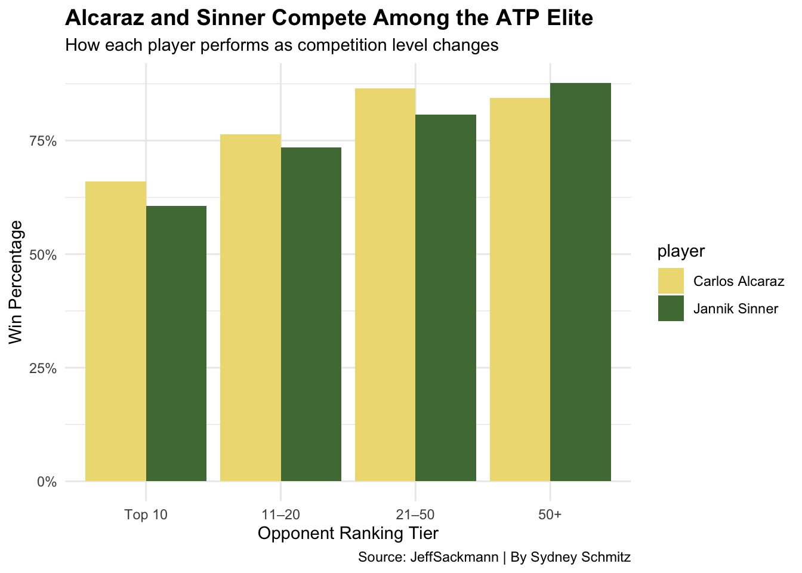
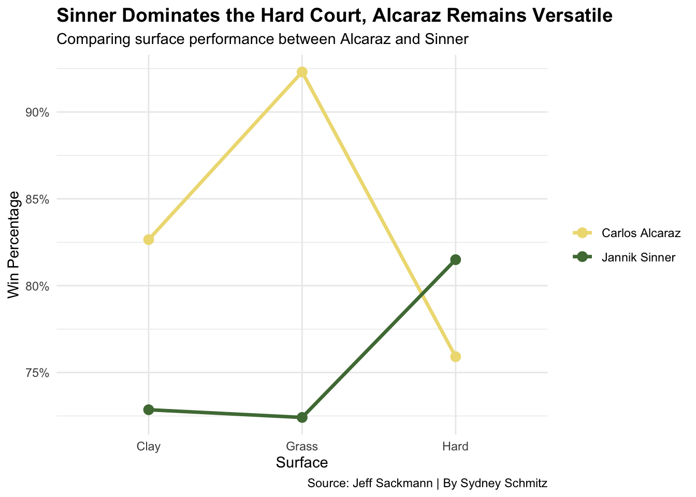

Alcaraz vs. Sinner: Who is the More Complete Player?
ATP
Carlos Alcaraz
Jannik Sinner
Author
Sydney Schmitz
Published
April 10, 2026
For nearly two decades, men’s tennis was defined by three names — Rafael Nadal, Roger Federer, and Novak Djokovic. But as that era begins to fade, a new rivalry is taking center stage in the ATP.
The 2025 French Open wasn’t just any other Grand Slam. The championship match between Carlos Alcaraz and Jannik Sinner solidified their dominance as the new top two. Alcaraz shockingly came back from being down two sets to beat Sinner in a five-hour, 30-minute-long marathon of a match, one of the longest in the modern era. This match was a full on display of Sinner’s mental resilience and consistency from the baseline, while showcasing the physical endurance and hard-hitting swings from Alcaraz.
Despite their opposing playstyles, these two are quite comparable:
They both turned pro in 2018 at the ages of 14 (Alcaraz) and 16 (Sinner). Their current ATP tour ranks are No. 1 (Alcaraz) and No. 2 (Sinner). Even their head-to-head record is tight, with Alcaraz winning 10 of 16 total matchups.
But beyond the excitement of their head-to-head rivalry, who is the more complete player overall?
To start, we’ll take a look at their performance against other top-ranking ATP players.
Code
library(tidyverse)all_matches <-bind_rows(read_csv("atp_matches_2020.csv"),read_csv("atp_matches_2021.csv"),read_csv("atp_matches_2022.csv"),read_csv("atp_matches_2023.csv"),read_csv("atp_matches_2024.csv"))players <-c("Carlos Alcaraz", "Jannik Sinner")rank_tiers <- all_matches %>%filter(winner_name %in% players | loser_name %in% players) %>%mutate(player =case_when( winner_name %in% players ~ winner_name, loser_name %in% players ~ loser_name ),opponent_rank =case_when( winner_name == player ~ loser_rank, loser_name == player ~ winner_rank ),win =ifelse(winner_name == player, 1, 0)) %>%filter(!is.na(opponent_rank)) %>%mutate(rank_group =case_when( opponent_rank <=10~"Top 10", opponent_rank <=20~"11–20", opponent_rank <=50~"21–50",TRUE~"50+" )) |>mutate(rank_group =factor(rank_group,levels =c("Top 10", "11–20", "21–50", "50+"))) |>group_by(player, rank_group) %>%summarise(win_pct =mean(win), .groups ="drop")ggplot(rank_tiers, aes(x = rank_group, y = win_pct, fill = player)) +geom_col(position ="dodge") +scale_fill_manual(values =c("Carlos Alcaraz"="#EEDC82","Jannik Sinner"="#4F7942" )) +scale_y_continuous(labels = scales::percent_format()) +labs(title ="Alcaraz and Sinner Compete Among the ATP Elite",subtitle ="How each player performs as competition level changes",caption ="Source: JeffSackmann | By Sydney Schmitz",x ="Opponent Ranking Tier",y ="Win Percentage" ) +theme_minimal()+theme(plot.title =element_text(face ="bold", size =14) )

Both Alcaraz and Sinner show strong win percentages against opponents ranked outside the top 50, which is expected for these two top-tier players. However, against top 20 opponents, Alcaraz separates himself slightly by maintaining a higher win percentage. It is crucial to consider opponent rank to understand the context of the match. Here, Alcaraz seems to be the one with a stronger ability to compete against the current best at a more consistent level, showing his ability to elevate performance in high-pressure situations and must-win matches.
Another important aspect in determining the most complete player is consistency across different court surfaces.
Professional tennis is unique in that it is not played on a standardized surface. While other sports, like baseball and soccer, allow for variations in field dimensions, no sport is as directly influenced by its playing surface as tennis, where the most subtle of differences between clay, grass and hard courts can dramatically shape playing style and match outcomes.
Let’s take a look at how well Alcaraz and Sinner play on the three surfaces.
Code
surface_data <- all_matches |>filter(winner_name %in% players | loser_name %in% players) |>mutate(player =case_when( winner_name %in% players ~ winner_name, loser_name %in% players ~ loser_name ),win =ifelse(winner_name == player, 1, 0)) |>group_by(player, surface) |>summarise(win_pct =mean(win), .groups ="drop")surface_data$surface <-factor(surface_data$surface,levels =c("Clay", "Grass", "Hard"))ggplot(surface_data, aes(x = surface, y = win_pct, group = player, color = player)) +geom_line(linewidth =1.2) +geom_point(size =3) +scale_color_manual(values =c("Carlos Alcaraz"="#EEDC82","Jannik Sinner"="#4F7942" )) +scale_y_continuous(labels = scales::percent_format()) +labs(title ="Sinner Dominates the Hard Court, Alcaraz Remains Versatile",subtitle ="Comparing surface performance between Alcaraz and Sinner",caption ="Source: Jeff Sackmann | By Sydney Schmitz",x ="Surface",y ="Win Percentage" ) +theme_minimal() +theme(plot.title =element_text(face ="bold", size =14),legend.title =element_blank() )

Because court surface plays a major role in overall tennis performance, it is important to be able to play at a high level on clay, grass and hard courts. While Sinner dominates the hard court, Alcaraz’s ability to perform well on all three shows his versatile, adaptable style of play.
This explains why Alcaraz already holds a career Grand Slam — the achievement of winning all four major championships — at just the age of 22. The U.S. Open and Australian Open are played on hard court, Wimbledon on grass and the French Open on clay. Sinner is only one away, having never won the French Open, from reaching his career Grand Slam. Alcaraz’s court versatility, without a doubt, lead to this achievement at the youngest age in history.
Now, let’s look at another important part to a tennis player’s success: the serve.
This chart shows a full breakdown of serve outcomes, accounting for every serve point from Alcaraz and Sinner. Highlighting not only how they win points, but where they lose them, we can relate this to their serving efficiency.
While their double fault percentage is similar, Sinner has the edge on aces. This is interesting, considering Alcaraz is known for consistently producing first serves at a speed of 130+ mph. With a larger percentage of aces, Sinner relies on spin and hitting angles on his serve to make it so difficult for opponents to return the ball in.
Sinner also has the greater ability to win points off of a typically weaker second serve, again showing how there are more important things than service speed and power. Through the pink sections, we see he does go to a second serve at a higher rate than Alcaraz, but is still able to convert points fairly well.
So who is the more complete player? It is difficult to determine.
Clearly, Carlos Alcaraz and Jannik Sinner are elite players and their rivalry is dominating the ATP. However, when combining all three areas — performance against top competition, surface versatility and serve effectiveness — one player emerges as slightly more complete:
Carlos Alcaraz.
That said, the margin is so small and Sinner’s strengths make sure that this rivalry is far from one-sided.
If their current trajectory means anything, these two will continue to dominate the ATP, and it will be interesting to clearly settle this debate when their careers come to a close.